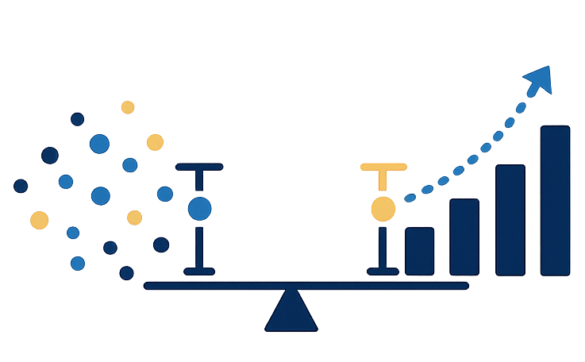

Randomized algorithms are convenient to test statistically: run the algorithm many times, compute a p-value, and assert that the null hypothesis is not rejected. The problem arises when you have several such tests in the same suite.
The multiple comparisons problem
Each individual test has a false rejection rate of α under the null hypothesis. When you run m independent tests, the probability that at least one spuriously rejects is
\[\text{FWER} = 1 - (1 - \alpha)^m\]
With \(\alpha = 0.05\) and \(m = 10\) tests this is about 40%. A CI system running such a suite would see a spurious rejection — and therefore a spurious test failure — on almost every other build.
The standard fix is to adjust the per-test threshold so that FWER stays at \(\alpha\). Plain Bonferroni does this by testing each hypothesis at \(\alpha/m\) — simple, but wasteful. The Holm-Bonferroni step-down procedure (Holm, 1979) is uniformly more powerful: it uses the same FWER guarantee but applies a less stringent threshold to hypotheses that are ranked further down the sorted list of p-values.
Why this is awkward in pytest
Holm-Bonferroni is inherently a post-hoc procedure. Given p-values \(p_1 \le p_2 \le \cdots \le p_m\), the threshold at rank \(k\) is \(\alpha / (m - k + 1)\). You cannot evaluate rank \(k\) until you have all \(m\) p-values in hand.
pytest determines pass/fail for each test as it runs, before the rest of the suite has completed. To apply Holm-Bonferroni you need to let every test finish, collect all p-values, and only then decide which tests passed.
What the plugin does
pytest-familywise adds an assertNotReject fixture. Tests call it with their computed p-value; the plugin stores the value but defers pass/fail entirely. A test passes when the null hypothesis is not rejected after correction, and fails when it is. After the session ends, the plugin:
- Sorts all registered p-values ascending.
- Applies the step-down procedure, marking each test passed or failed.
- Retroactively moves reports between pytest’s
passedandfailedstat buckets so the final summary line reflects the corrected outcomes. - Sets the session exit code to non-zero if any test failed.
The implementation hooks into pytest_runtest_logreport to capture reports, pytest_sessionfinish to run the correction and update session.exitstatus, and pytest_terminal_summary to rewrite the stat buckets and print the correction table before pytest prints its own N passed, M failed line.
A concrete example
Suppose you are testing a custom random number generator and want to verify three properties jointly, with FWER controlled at 5%.
# tests/test_rng.py
import numpy as np
import scipy.stats
def test_uniform_marginals(ks_sample_size, assertNotReject):
n = ks_sample_size(effect_size=0.05) # one-sample KS, ||F−G||∞ ≥ 0.05
samples = np.random.rand(n)
assertNotReject(scipy.stats.kstest(samples, "uniform").pvalue)
def test_normal_mean_zero(ztest_sample_size, assertNotReject):
n = ztest_sample_size(effect_size=0.3) # Cohen's d = 0.3
samples = np.random.randn(n)
_, p = scipy.stats.ttest_1samp(samples, 0.0)
assertNotReject(p)
def test_discrete_distribution(chisquare_sample_size, assertNotReject):
n = chisquare_sample_size(effect_size=0.2, df=4) # Cohen's w = 0.2
observed = np.random.multinomial(n, [0.2] * 5)
_, p = scipy.stats.chisquare(observed)
assertNotReject(p)pytest --holm-alpha=0.05 --power=0.8Output after all three tests complete:
============ Holm-Bonferroni correction α=0.05 n=3 =============
PASSED p=0.312541 threshold=0.016667 test_rng.py::test_uniform_marginals
PASSED p=0.487302 threshold=0.025000 test_rng.py::test_normal_mean_zero
PASSED p=0.621088 threshold=0.050000 test_rng.py::test_discrete_distribution
3 passed, 0 failed after Holm-Bonferroni correctionAll three p-values are large (data consistent with H0), so none are rejected and all tests pass. The thresholds tighten for the lowest-ranked p-values (0.017 for rank 1, relaxing to 0.050 for rank 3). If the rank-1 test had returned p = 0.01, it would be rejected (0.01 < 0.017) and that test would fail — but the remaining tests would still pass as long as the step-down procedure stops rejecting before reaching them.
Sample-size fixtures
Each test above starts by asking the plugin how many samples are needed to achieve the requested power. This is worth doing explicitly rather than picking a number by hand: a test with insufficient power will produce false negatives silently, and a test with excess samples wastes time.
The plugin provides three fixtures, one per test family. They all read --holm-alpha and --power from the command line, so you set the targets once and the sizing follows automatically.
z-test (ztest_sample_size): closed-form solution
\[n = \left\lceil \left(\frac{z_\alpha + z_\beta}{d}\right)^2 \right\rceil\]
where \(d\) is Cohen’s \(d\) and \(z_\alpha\), \(z_\beta\) are the appropriate normal quantiles. At \(\alpha = 0.05\), power \(= 0.8\), \(d = 0.5\) this gives \(n = 32\).
chi-square (chisquare_sample_size): numerical root-finding on the non-central \(\chi^2\) survival function. The non-centrality parameter is \(\lambda = n w^2\) where \(w\) is Cohen’s \(w\); we find the smallest integer \(n\) such that \(P(\chi^2(df, \lambda) > c_{1-\alpha}) \ge \text{power}\).
Kolmogorov-Smirnov (ks_sample_size): closed form derived from the Dvoretzky-Kiefer-Wolfowitz inequality. Given the maximum CDF discrepancy \(\Delta\) and setting \(\beta = 1 - \text{power}\), the bound is:
\[n \ge \frac{\left(\sqrt{\ln(2/\alpha)} + \sqrt{\ln(2/\beta)}\right)^2}{2\Delta^2}\]
The derivation equates the Type-I and Type-II DKW boundaries at the effect size, then solves for \(n\). For a two-sample test with equal group sizes the effective \(n\) is \(n_\text{each}/2\), so the returned per-group count is doubled.
All three fixtures treat --power as a per-test rate, not a family-wise one. They use the nominal --holm-alpha directly rather than a Bonferroni-adjusted per-test level. This is slightly anticonservative for the first tests in the ordering, but it is consistent with the intent of specifying per-test power.
Loading the plugin
The package registers itself via a pytest11 entry point, so installing it is sufficient:
uv add --dev pytest-familywiseLimitations
The plugin does not model within-suite dependence. Holm-Bonferroni controls FWER under arbitrary dependence (it is valid beyond independence), but the power analysis for the sample-size fixtures assumes independence. If tests share data, the sizing estimates may be off.
Tests that raise an exception before calling assertNotReject fail normally and are excluded from the Holm-Bonferroni set — the correction applies only to tests that complete and register a p-value.